The Sign of Jonah
Jesus was asked for one sign. He gave them a man swallowed by the deep.

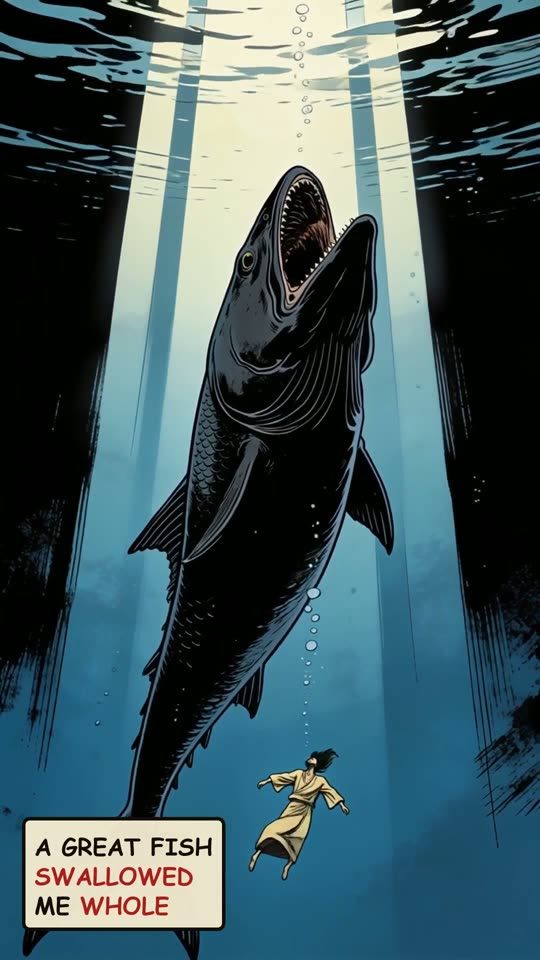
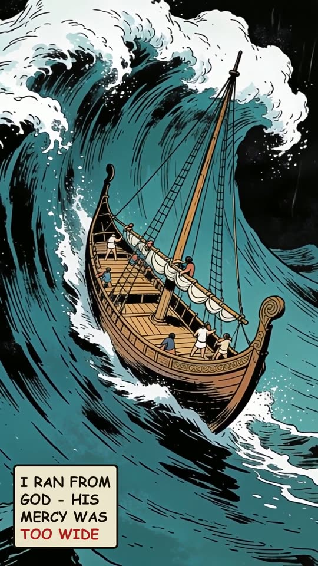
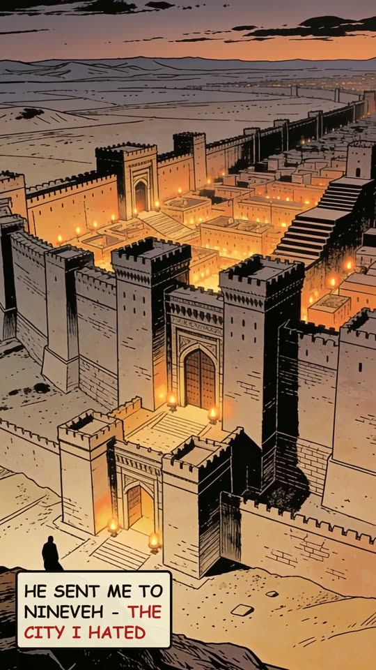
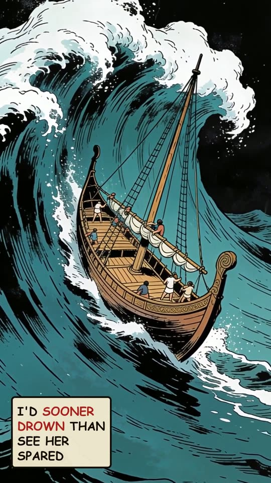
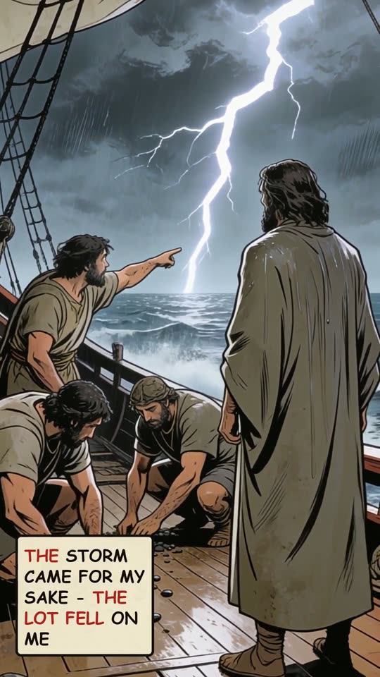
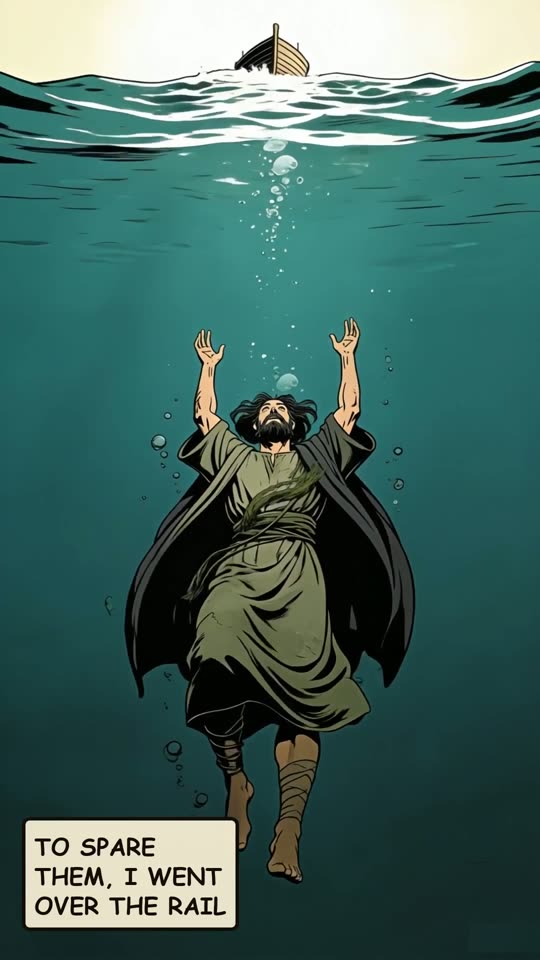
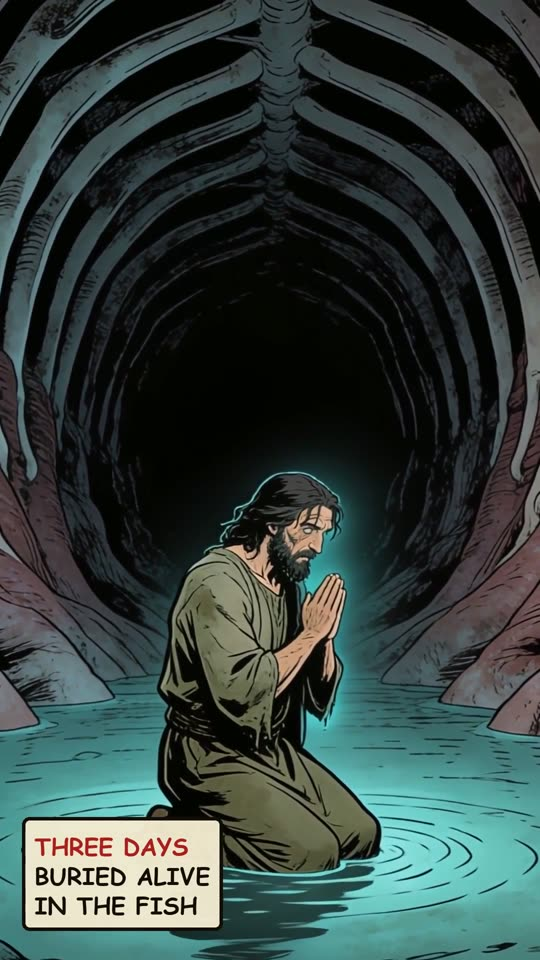
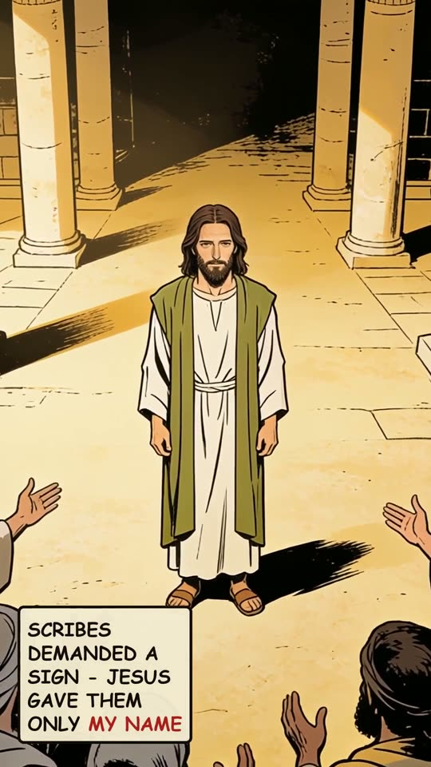
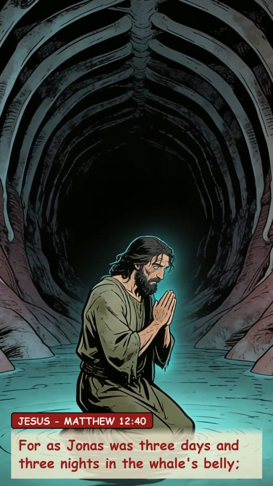
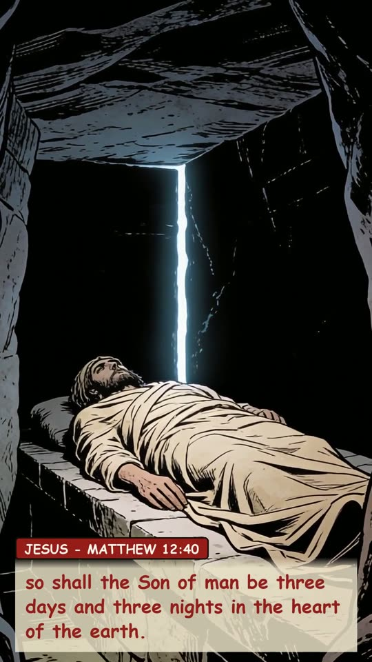
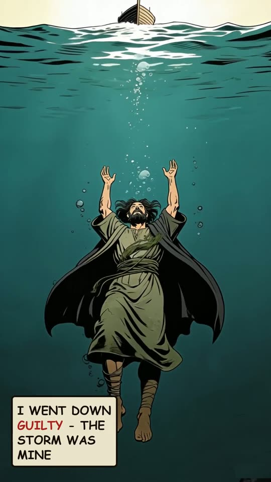
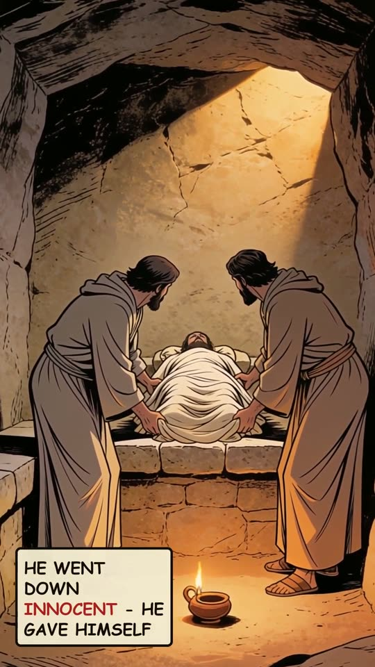
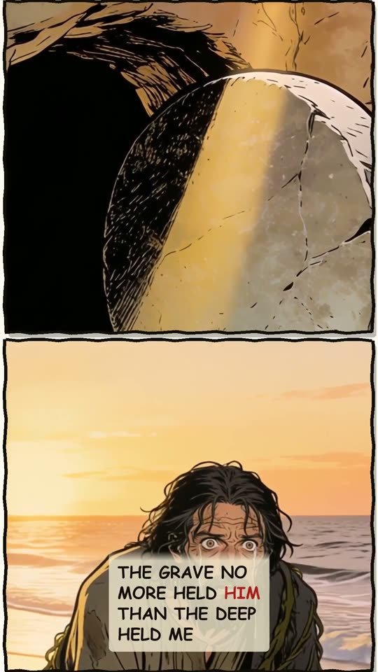
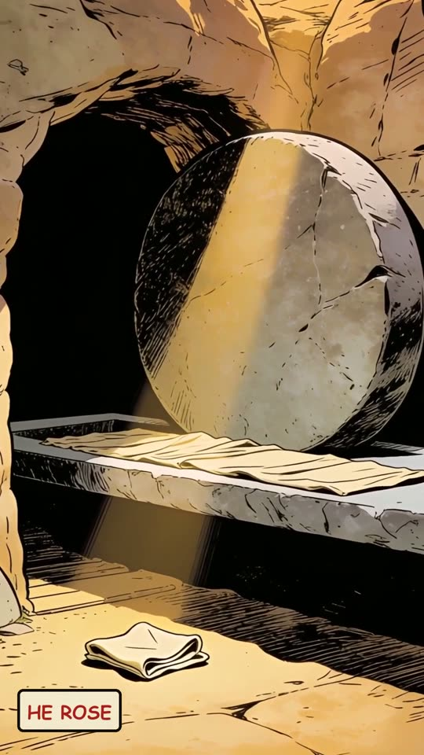
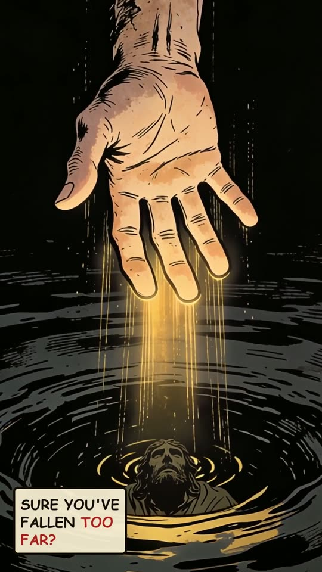
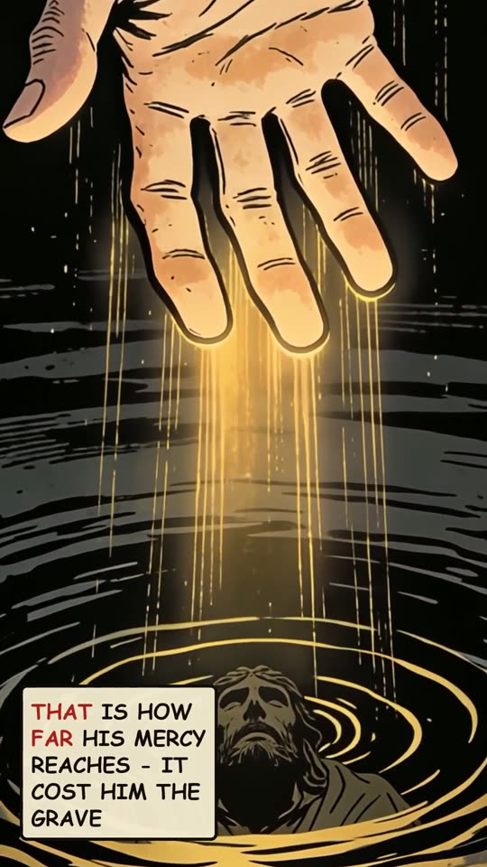
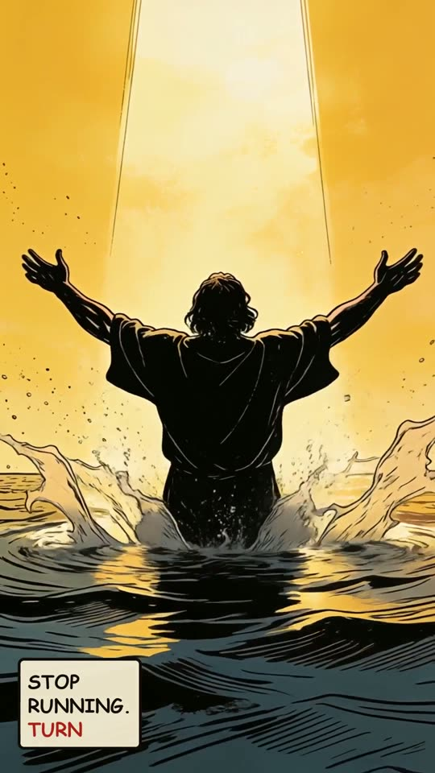
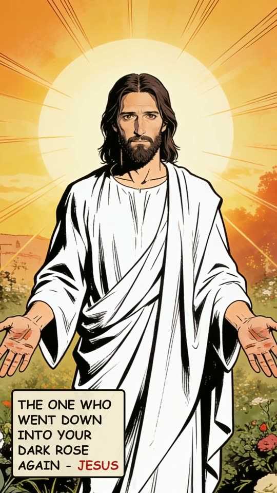
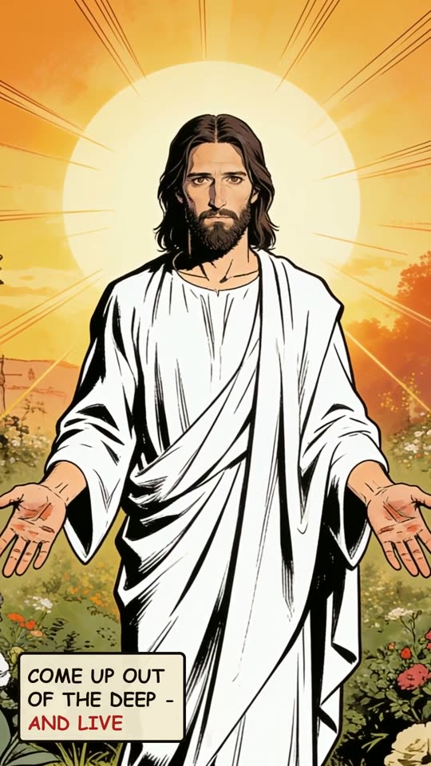
The narration
I told the sailors to throw me into the sea, and a great fish swallowed me whole, and buried me alive in the dark. I ran from God because His mercy was too wide. He sent me to Nineveh, the city I hated, I'd sooner drown than see her spared. The storm came for my sake; the lot fell on me. To spare the sailors, I had them throw me overboard. Three days buried alive in the fish. Then, long after I was dust, scribes demanded a sign, Jesus gave them only my name: For as Jonas was three days and three nights in the whale's belly; so shall the Son of man be three days and three nights in the heart of the earth. I went down guilty, the storm was mine. He went down innocent, bearing what was ours; He gave Himself. The grave no more held Him than the deep held me. He rose. You who are sure you've fallen too far, that is how far His mercy reaches. It cost Him the grave. Stop running, and turn: the One who went down into your dark and rose again is Jesus. Come up out of the deep, and live.